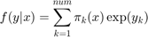
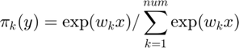
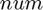
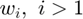
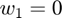
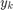
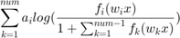

softmaxfactory
Construct a softmax gate distribution structure
Syntax
D = softmaxfactory(num, datadim) D = softmaxfactory(num)
Description
D = softmaxfactory(num, datadim) returns a structure representing a softmax gate distribution. num is the number of factors. datadim is the dimensionality of the input space.
D = softmaxfactory(num) is the same as above with datadim = 1.
Distribution Parameters
- W (num-by-datadim matrix) : A matrix containing weights corresponding to each distribution.
Discrete Probability Density Function Conditioned on Input Space
The distribution has the following density:

where

wherein  is the number of components,  are parameters,  and  is the log-likelihood of the kth conditional distribution.
name
See distribution structure common members.
M
See distribution structure common members.
num
Number of components (excluding any fixed components)
Syntax
num = D.num()
dim
See distribution structure common members.
datadim
See distribution structure common members.
llvec
See distribution structure common members.
ll
The same as distribution structure common members with the difference that here the log-likelihood of all discrete output values is computed as a function of the input vector.
llgrad
See distribution structure common members. Here the gradient of the parameters are given by 
llgraddata
See distribution structure common members.
randparam
See distribution structure common members.
init
See distribution structure common members.
estimateMstep
When using EM algorithm for MoE, M-step estimation for gates is needed The cost function here is convex and therefore it converges rapidly
penalizerparam
See distribution structure common members.
penalizercost
See distribution structure common members.
penalizergrad
See distribution structure common members.
sumparam
See distribution structure common members.
scaleparam
See distribution structure common members.
sumgrad
See distribution structure common members.
scalegrad
See distribution structure common members.
entropy
See distribution structure common members.
kl
See distribution structure common members.
AICc
See distribution structure common members.
BIC
See distribution structure common members.